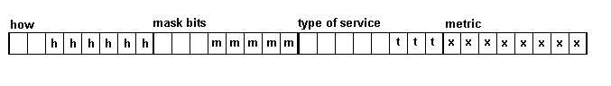

This code is ran by a task it takes peps from the _ip_queue works out the interface to send the packet to and gets rid of it by calling :ip_consume for that interface. The word that does the job is rtget.
RFC1812OSPF uses an algorithm that is virtually identical to the Router Requirements Algorithm except for one crucial difference: OSPF considers OSPF route classes.
The algorithm is:
1. Basic match
2. OSPF route class
3. Longest match
4. Weak TOS
5. Best metric
6. Policy
The basic match is the first test. Zero TOS has lower prority than other types. If the type of service is non zero there has to be an exact match. The sort_key encodes starting from highest bits. OSPF route class ( called how), longest match ( most bits in mask).,and tos. The sort key determines link order, it dosn't have to be generated for a routing.
After how, number of bits and tos the policy is determined by the link order, last linked in is the one used

\ routing task action words
\ count the number of bits in the mask
: _ip_bits_set ( x -- n )
zero
IP_ALEN_BITS 0 DO
OVER 01 AND +
SWAP
2/
SWAP
LOOP
NIP
;
: _make_sort_key { variable %mask
variable %tos
variable %how
variable %metric -- ( key ) }
%how @ 8 LSHIFT
%mask @ _ip_bits_set OR 8 LSHIFT
%tos @ OR 8 LSHIFT
\ lower is better link is from highest to lowerest
%metric @ $FF SWAP - OR
;
\ fields in sort key that have to be same for match to be found
\ The metric part of the key is irrelevent for a match.
$FFFFFF00 CONSTANT RT_SK_SAME_MASK
\ we hash on the destination only.
: _ip>hash { ( ip_addr mask -- hash ) }{
variable %network }
AND %network !
%network 4
\ checksum gives a nice flat distribution for most data
checksum
RT_TSIZE_MASK AND
;
\ it is a match if destination match and tos requirments are met.
: _net_match { variable %route variable %dst variable %tos -- ( flag ) }
%route @ rt_mask + @ %dst @ AND
%route @ rt_net + @
= not IF
FALSE EXIT
THEN
\ if tos of service for route is zero then route is ok
%route @ rt_tos + @
not IF
TRUE EXIT
THEN
\ route is only acceptable now it tos match
%route @ rt_tos + @ %tos @ =
;
\ route cannot be used if has timed out or it's distance is way too large.
: _valid_route? ( route --flag )
DUP rt_ttl + @ xclock- @ + 0>
OVER rt_forever + @ OR IF
\ we match the route
\ The destination is reachable
DUP rt_metric + @ RTM_INF < IF \ >
DROP
TRUE EXIT
THEN
THEN
DROP
FALSE
;
\ route_free - remove a route reference
\ The refcnt is set to one in route_add, and is descremented in rttimer.
\ route_get increments
\ the count and as you can see route_free decrements it. The routing words
\ are written so that the routing tables are a resource that can be shared
\ without claiming.
\ Timeout routine will remove routes with non positive counts
: route_free ( route --)
-1 SWAP rt_refcnt + +!
;
\ only called inthe timeout routine.
: route_delete ( route-- )
DUP rt_refcnt + @ 0> IF
DROP EXIT
THEN
DUP unlink_double
kill_free_buffer
;
\ given a destination and tos return a route record.
: route_get { variable %dst variable %tos -- ( route_entry|0 ) }
\ get the list head.
%dst @
DUP ip>default_mask _ip>hash
%rttable +
\ list(--
BEGIN
@ ?DUP
WHILE
\ Done in most likely to fail order
\ match desired address
DUP %dst @ %tos @ _net_match
IF
\ entry has still got time to live
DUP _valid_route? IF
1 OVER rt_refcnt + +!
1 OVER rt_usecnt + +!
EXIT
THEN
THEN
REPEAT
\ go for the default route
\ Note there can be multiple default routes for different
\ service types. Allowing only one default route record
\ is not an option if your providing different types of services.
0 0 _ip>hash
%rttable +
BEGIN
@ ?DUP
WHILE
\ Done in most likely to fail order
\ match desired address
DUP %dst @ %tos @ _net_match IF
\ entry has still got time to live
DUP _valid_route? IF
1 OVER rt_refcnt + +!
1 OVER rt_usecnt + +!
EXIT
THEN
THEN
REPEAT
\ destination cannot be reached
zero
;
\ icmp requires us to return a route for returned datagram.
\ we need to be able to extract the route using the ip base
\ address
: _ip_route_get ( ip -- route_entry|0 )
\ ip(--
DUP ip_dst + @
SWAP _ip>ip_tos
route_get
;
\ this looks for a record that can be used to route the packet
\ remember after you do a route_get you have to do a route_free
\ This is the word that has to be executed to route a packet.
\ I think, by any standard it is resonable tight code.
\
\ By using a seperate search for the route with no mask ( the default)
\ the default route can be treated like any other and there is
\ no default route to maintain.
: _pep_route_get ( pep -- route_entry|0 )
ep_data + _ip_route_get
;
\ This looks for a particular record
\ remember after you do a _rt_record_get you have to do a route_free
\ how, mask_bit_lengths, tos, and metric are included in the hash value.
\ Records with same gateway, same how, same mask_bit_length and same tos
\ are the same. We therefor need to remove the metric from the sort key.
\ This is done in rt_record.
: _rt_record_get {
variable %net
variable %gw
variable %mask
variable %tos
variable %how
-- ( addr ) }{
variable %sort_key }
\ mask tos how and metric are hashed into the sort_key
\ If all but the metric is the same then this is the record.
%mask @ %tos @ %how @ zero _make_sort_key RT_SK_SAME_MASK AND %sort_key !
%net @ DUP ip>default_mask _ip>hash
%rttable +
BEGIN
@ ?DUP
WHILE
DUP rt_net + @ %net @ = IF
DUP rt_gw + @ %gw @ = IF
DUP rt_sort + @ RT_SK_SAME_MASK AND %sort_key @ = IF
\ The mask should be contiguous bits in the left
\ of the mask, so equality of the sort key should be it
\ but to allow for crazy masks we have to do
\ a mask compare
DUP rt_mask + @ %mask @ = IF
\ add to reference count
\ have to use _route_free when finished
\ with _rt_record_get
1 OVER rt_refcnt + +!
EXIT
THEN
THEN
THEN
THEN
REPEAT
zero
;
: _find_link_position ( key head -- head )
BEGIN
DUP @
WHILE
DUP @ rt_sort + @
\ key link test_key(--
jump > not IF
NIP
EXIT
THEN
@
REPEAT
NIP
;
: _link_in_route_record { variable %rt_record -- }
\ The position to link in the list is dependent on the sort key
%rt_record @ rt_mask + @
%rt_record @ rt_tos + @
%rt_record @ rt_how + @
%rt_record @ rt_metric + @ _make_sort_key
DUP %rt_record @ rt_sort + !
\ the list to link into is dependent on the destination
%rt_record @ rt_net + @
DUP ip>default_mask
_ip>hash %rttable +
\ head (--
\ trace down list until sortkey less
\ the masks with more bits are at the start of the list
_find_link_position
%rt_record @ SWAP link_double
;
\ remember our promise to the timer task; we will not delete
\ routing table records.
\ how, mask_bit_lengths, tos, and metric are included in the hash value.
\ Records with same gateway, same how, same mask_bit_length and same tos
\ are the same. We therefor need to remove the metric from the sort key.
\ This is done in rt_record.
: route_add { variable %net
variable %mask
variable %gw
variable %metric
variable %tos
variable %interface
variable %ttl
variable %how
variable %broadcast ( -- $ ) }{
variable %rt_record }
%net @ %gw @ %mask @ %tos @ %how @ _rt_record_get %rt_record !
\ If %rt_record is not zero everything is the same except the metric
\ which may be the same.
%rt_record @
IF
%rt_record @ rt_metric + @ %metric @ <> IF
\ we have to unlink update metric
\ and relink
%rt_record @ unlink_double
%metric @ %rt_record @ rt_metric + !
%rt_record @ _link_in_route_record
THEN
\ decrement count increased by _rt_record_get
%rt_record @ route_free
zero
EXIT
THEN
\ (--
\ It is a new route
\ Note we don't just keep the best route, we keep all with
\ the timeout routine removing them. They are kept in sorted order
\ from best to worse. So if the timer routine removes a good route we
\ just fall back to the not so good.
rt_length ['] get_free_buffer CATCH ?DUP IF
\ just smile
NIP \ get rid of length
EXIT
THEN
[ last_definition ]T LITERAL OVER buffer_save_ip
%rt_record !
\ (--
%rt_record @ rt_length ERASE
%broadcast @ %rt_record @ rt_broadcast + !
%net @ %rt_record @ rt_net + !
%mask @ %rt_record @ rt_mask + !
%gw @ %rt_record @ rt_gw + !
%metric @ %rt_record @ rt_metric + !
%tos @ %rt_record @ rt_tos + !
%interface @ %rt_record @ rt_interface + !
%ttl @ xclock+ @ + %rt_record @ rt_ttl + !
%ttl @ RT_INF = IF
TRUE %rt_record @ rt_forever + !
THEN
%how @ %rt_record @ rt_how + !
\ this will be decremented when the timer
\ routine releases the route. Up until then it prevents
\ others from deleting it.
1 %rt_record @ rt_refcnt + +!
\ (--
%rt_record @ _link_in_route_record
\ (--
zero
;
: static_route ( net mask gw metric tos interface--)
RT_INF RT_STATIC FALSE route_add $ABORT
;
: broadcast_route ( net mask gw metric tos interface--)
RT_INF RT_STATIC TRUE route_add $ABORT
;
\ This word must take care rtget and rtadd are used in a high level tasks
\ rttimer is a low level task. We must take care to keep
\ the route table valid at all times. We are the only
\ ones that can remove a route; we can only do it if the reference count is zero
: _rttimer { ( --) }{
variable %rip_notify
}
FALSE %rip_notify !
[ RT_TSIZE 4* %rttable + ]T LITERAL %rttable DO
\ (--
I @
BEGIN
?DUP
WHILE
\ packet may begone by the REPEAT so get next address now
DUP @ SWAP
\ next_in_list list(--
DUP rt_ttl + @ xclock- @ + 0> not OVER rt_forever + @ not AND IF
\ route has timed out
DUP rt_metric + @ RTM_INF < IF \ >
TRUE %rip_notify !
\ destination cannot be reached
RTM_INF OVER rt_metric + !
\ route lives for a while
xclock+ @ RIPZTIME + OVER rt_ttl + !
ELSE
\ the second timeout has occured. Time
\ to delete. The delete will not occure
\ This descrements the count set in rt_add
\ if somone is using the entry it will
\ still be positive.
DUP route_free
THEN
THEN
\ will only delete if reference count is zero.
route_delete
REPEAT
xpause
cell +LOOP
\ %rip_notify @ IF
\ _lock_word
\ %rip_activation @ IF
\ wake %rip_activation @ !
\ zero %rip_activation !
\ THEN
\ _unlock_word
\ THEN
;
This is the word executed by the route task. It waits for a packet on the ip queue, finds a route, if found it calls :consume_interface to get rid of the packet and that is it.
ram_variable %no_route_discards
: _route_ip_packet ( --)
_ip_queue dequeue ?DUP IF
\ pep(--
DUP _pep_route_get ?DUP IF
\ pep route(--
\ The nexthop address determines the box we send the
\ datgram to; if there is no gateway entry then we
\ want to send it to the datagram destination.
2DUP rt_gw + @
\ pep route pep gw(--
?DUP IF
\ pep route pep gw(--
SWAP ep_nexthop + !
ELSE
\ pep route pep (--
DUP [ ep_data ip_dst + ]T LITERAL + @
SWAP ep_nexthop + !
THEN
\ pep route(--
\ ttl is decremented in interface if not zero;
\ routing sets to route ttl if
\ not less than RTM_INF.
\ Interface sending to wire will discard datagram that does not
\ have a ttl value greater than zero.
\ A received datagram with zero ttl will be received locally but
\ will not be passed on.
OVER [ ep_data ip_ttl + ]T LITERAL + B@ RTM_INF < not IF \ >
\ pep route(--
2DUP rt_metric + @ SWAP [ ep_data ip_ttl + ]T LITERAL + B!
THEN
\ pep route(--
DUP rt_broadcast + @
IF
\ pep route(--
DUP rt_interface + @
SWAP route_free
:broadcast
ELSE
DUP rt_interface + @
SWAP route_free
:consume_interface
THEN
ELSE
\ pep(--
\ no route
1 %no_route_discards +!
\ if a local datagram the source has to be set to local
\ machine. This will be swapped icmp_error and become the
\ destination of the error message.
DUP [ ep_data ip_src + ]T LITERAL + @ not IF
127.000.000.000 OVER [ ep_data ip_src + ]T LITERAL + !
\ There sould be a gateway to send messades to; if
\ a local message ends up here; this is a resonable
\ conclusion.
_#icc_scr_host_isolated SWAP icmp_routing_error
EXIT
THEN
_#icc_net_unreached SWAP icmp_routing_error
THEN
THEN
;
: _.route { variable %addr -- }
CR
." net ip : " %addr @ rt_net + @ .h
." mask ip : " %addr @ rt_mask + @ .h
." how added: " %addr @ rt_how + @ .h
." type serv: " %addr @ rt_tos + @ .h
CR
." gateway : " %addr @ rt_gw + @ .h
." metric : " %addr @ rt_metric + @ .h
." interface: " %addr @ rt_interface + @ .h
." ttl : " %addr @ rt_ttl + @ .h
CR
." forever : " %addr @ rt_forever + @ .h
." broadcast: " %addr @ rt_broadcast + @ .h
." ref count: " %addr @ rt_refcnt + @ .h
." use count: " %addr @ rt_usecnt + @ .h
;
: .route
%rttable
RT_TSIZE zero DO
DUP BEGIN
@ DUP
WHILE
CR
DUP _.route
REPEAT
DROP
cell +
LOOP
DROP
;